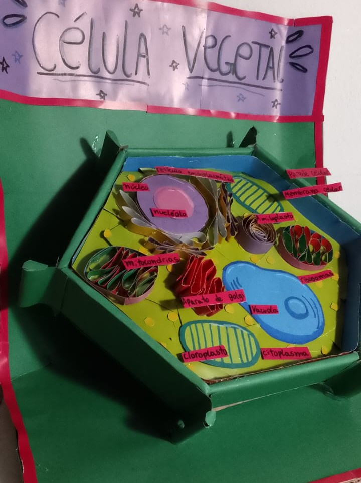

sobre
Este site faz parte do trabalho de Biologia do 4º bimestre: uma maquete de célula vegetal, feita principalmente com papel e papelão.
Nossa maquete
Cada parte da maquete representa uma estrutura da célula vegetal, com o nome indicado em uma etiqueta. A foto mostra a maquete vista de outro ângulo.

Equipe
- Frederico S.
- Eluiza L.
- Vitoria S.
Informações do trabalho
- Curso: Técnico em Informática Integrado ao Ensino Médio
- Turma: 1º ano (1º período)
- Disciplina: Biologia
- Professora: Ana Cristina Gobbo Cesar
- Instituição: IFSP, Campus Bragança Paulista